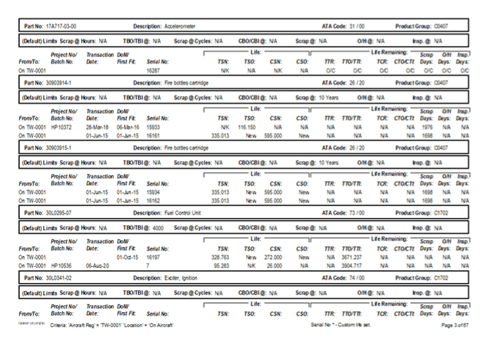

About Me
The Aviation Chapter
A big part of my story began in aviation. I studied Aeronautical Engineering and later worked in the field, where I learned how much coordination, discipline, and behind‑the‑scenes effort it takes to keep everything moving safely and smoothly

Seeing the Gap
The more I experienced aviation up close, the more I noticed how many processes still relied on paper, manual steps, and disconnected systems. Even when tech was involved, the gap between industry knowledge and software understanding made things harder than they needed to be.
Why Software Development
That’s what inspired me to study software development. I want to help bridge aviation and technology, especially on the data side, so that complex processes can become clearer, smarter, and more efficient.

Looking Ahead
As I continue growing in software development, I’m especially interested in exploring data-focused roles and finding ways to bridge aviation and technology. I’m excited to keep building skills that help solve real problems and create meaningful improvements in the industry.